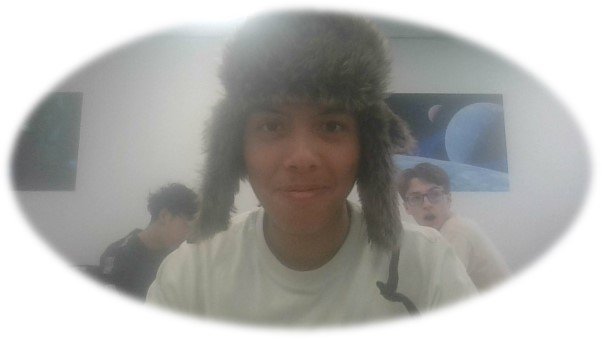

Wie ben ik?
Mijn naam is Joaquim Jose Romeira De Bastos, maar mensen noemen mij J.J.
Ik ben 16 jaar oud.
Woonplaats
Ik woon in Hoofddorp, er is niet veel te vertellen over de plek waar ik woon.
Hoofddorp is een rustig dorpje met een winkelcentrum.

In mijn vrije tijd
Mijn hobbies zijn met hardware werken, programeren, bakken en ook skaten.
ik doe ook fotografie en ik heb 6 jaar aan experience.
Wat kan ik al?
Ik kan HTML en CSS, en ik heb 6 jaar in Fotografie.
Ik kan ook rollerskaten en ik ben op dit moment aan het leren hoe ik moet skateboarden.
Mijn top 10 songs
- 1. boa - duvet
- 2. Nujabes - luv (sic)
- 3. Ennio Morricone - Interval I
- 4. SOUL SCREAM - Comatus
- 5. The Beach Boys - Deirdre
- 6. Golemn - Untouchable
- 7. Gang Starr - What I'm here 4
- 8. Lyric Piece book 1, op. 12 Edvard Grieg
- 9. Soundgarden - Black Hole Sun
- 10. Nujabes - Letter from Yokosuka